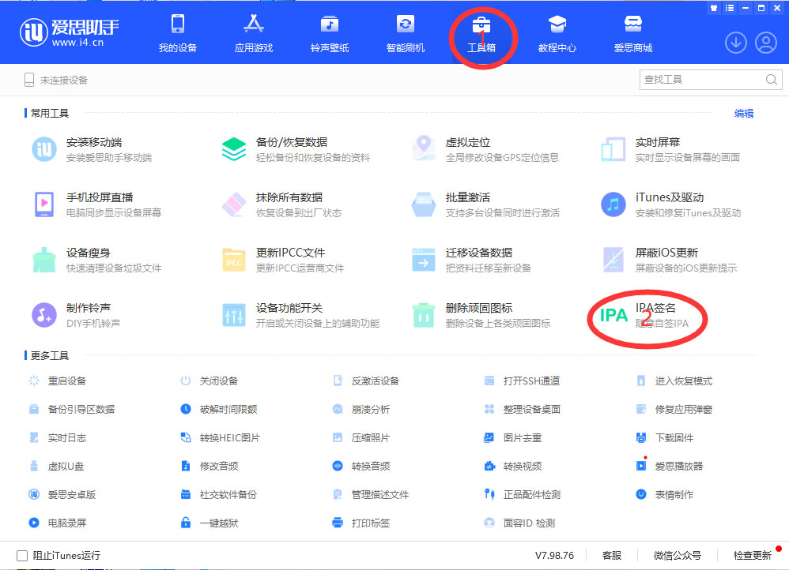
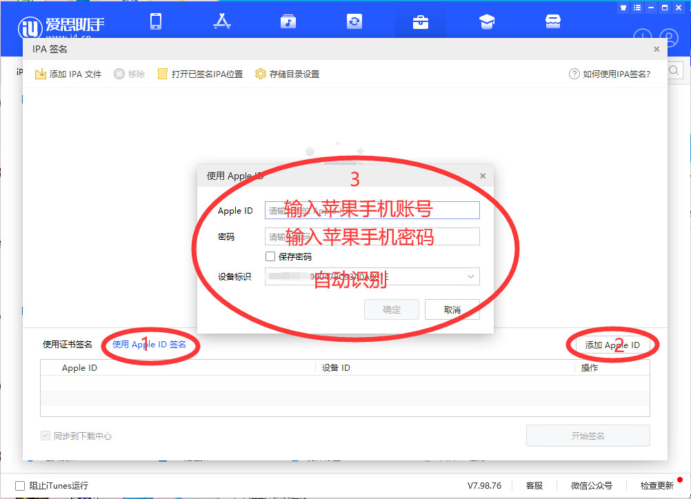
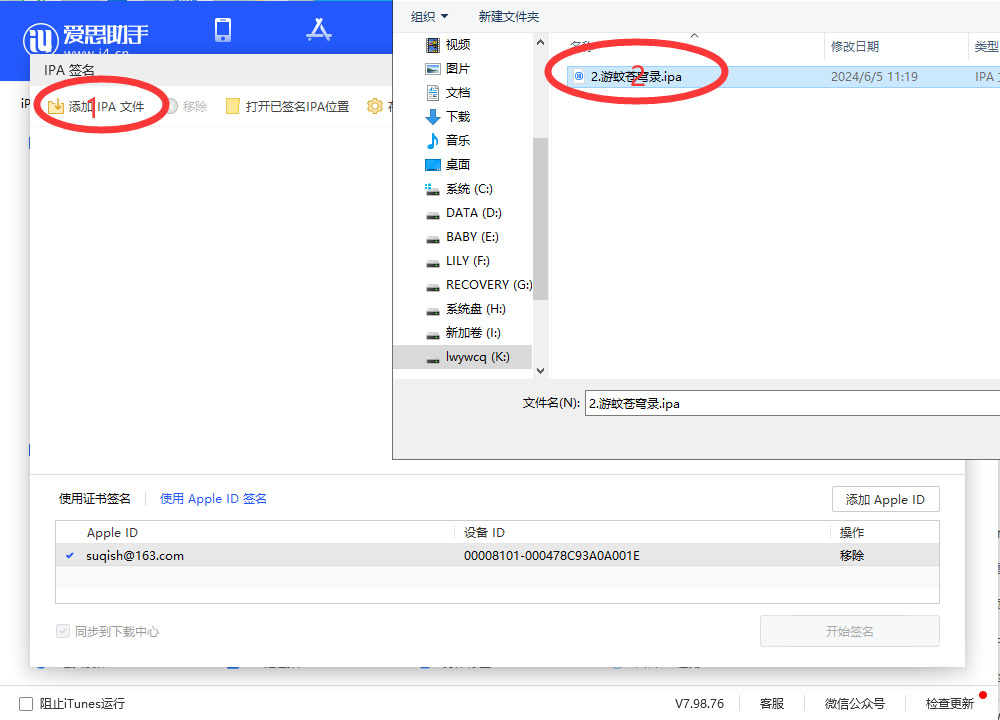
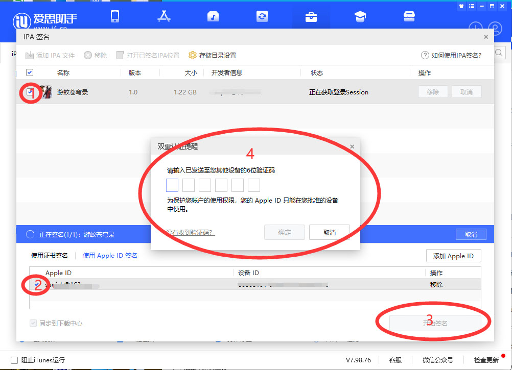
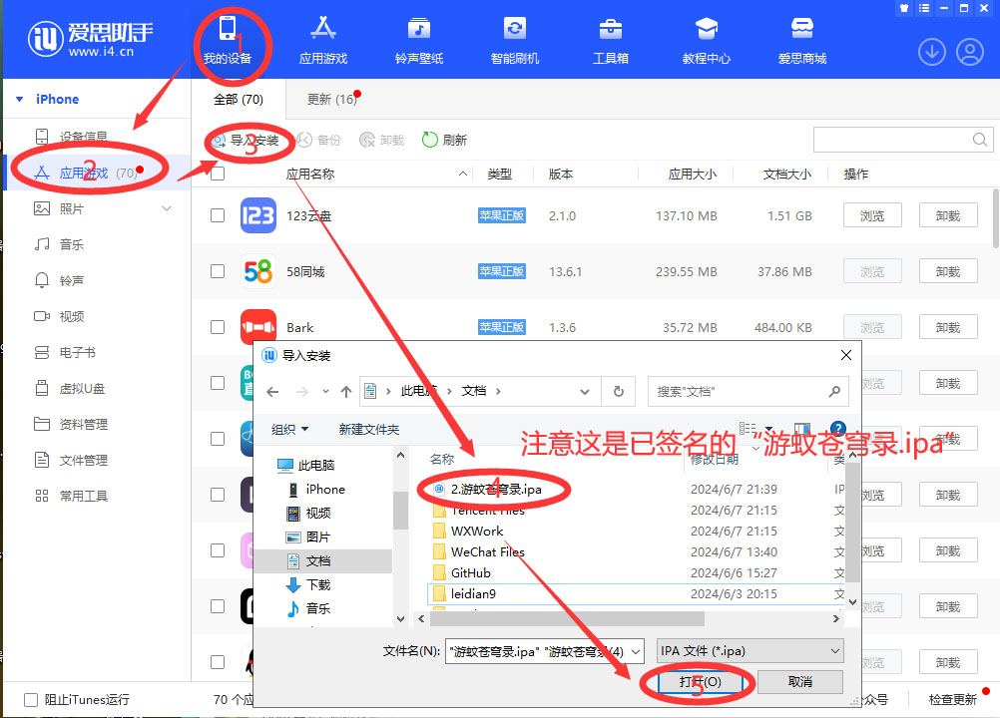
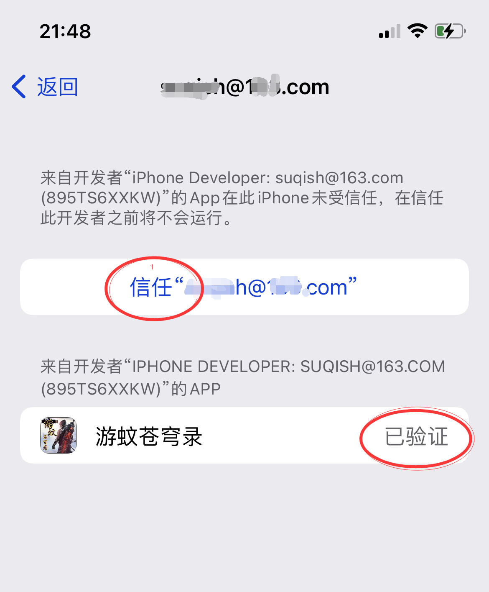

游蚊苍穹录苹果手机使用爱思助手进行签名教程
1.下载群文件里的“爱思助手.exe”和“游蚊苍穹录.ipa”；安装好爱思助手到电脑上！手机连电脑并打开爱思助手，选择“工具箱”- “IPA签名”；

2.选择“使用 Apple ID 签名 - 添加 Apple ID”，输入自已的｛Apple ID｝、｛密码｝；

3.点“添加IPA文件”，找到下好的“游蚊苍穹录.ipa”，点“确认”

4.打勾要签名的ipa和账号，点开始签名（手机会收到验证码进行输入即可），然后等待（签名成功）

5.点上面"我的设备"-"应用游戏"-"导入安装"，找到已签好名的"游蚊苍穹录.ipa"，点"打开"（等待安装完成）

6.点上面"我的设备"-"应用游戏"-"导入安装"，找到已签好名的"游蚊苍穹录.ipa"，点"打开"（等待安装完成）
7.手机操作：点"设置"-"通用"-"VPN与设备管理"-“点你的账号”-点"信任"
